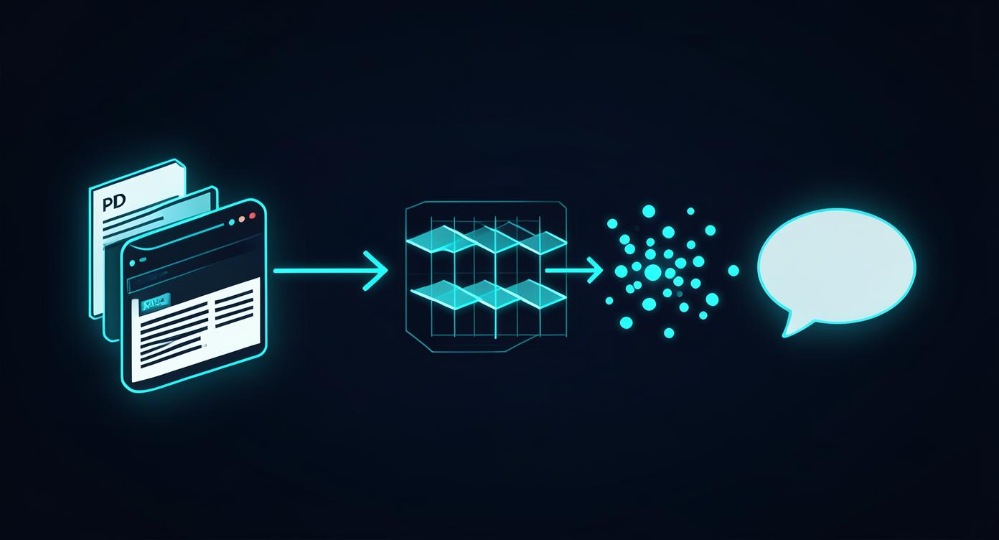

RAG vs Fine-Tuning: AI Me Kaunsa Tarika Kab Chunein
जब भी किसी कंपनी को अपना AI assistant चाहिए होता है, बात जल्दी ही एक सवाल पर आ जाती है — मॉडल को अपने data पर fine-tune करें या उसे documents खोजकर देने वाला RAG system बनाएँ? दोनों में से कोई भी "सही" या "गलत" नहीं है। यह फैसला इस बात पर टिका है कि आपको model को नया हुनर सिखाना है या उसे नई जानकारी देनी है। इसी एक अंतर को समझ लेने से आधे प्रोजेक्ट बच जाते हैं, क्योंकि ज़्यादातर team गलत tool से शुरू करती है और तीन महीने बाद पता चलता है कि problem दूसरी थी।
इस guide में मैं दोनों तरीकों को उनके असली काम के हिसाब से खोलूँगा — pipeline, खर्च, data की तैयारी, टीम की ज़रूरत और वे स्थितियाँ जहाँ एक दूसरे से बेहतर है। साथ में बताऊँगा कि दोनों को एक साथ कैसे इस्तेमाल किया जाता है, और वे पाँच गलतियाँ जो मैंने खुद देखी हैं।
छोटा जवाब: अगर जवाब आपके documents, policy, price list या बदलती जानकारी में है — तो RAG चुनें, क्योंकि इसमें data को बार-बार model में डालना नहीं पड़ता। अगर आपको style, format, tone या किसी खास तरह का output चाहिए जो model अपने आप नहीं देता — तो fine-tuning चुनें। ज़्यादातर production systems में दोनों साथ चलते हैं: fine-tuning से व्यवहार तय होता है, RAG से ताज़ा जानकारी आती है।
RAG क्या है और यह कैसे काम करता है
RAG का पूरा नाम Retrieval-Augmented Generation है। सीधा मतलब: जवाब बनाने से पहले model को आपके अपने data में से relevant हिस्से खोजकर दिए जाते हैं। Model नए facts याद नहीं करता, वह सिर्फ़ उसी समय मिली जानकारी के आधार पर जवाब लिखता है। यही वजह है कि RAG वाले assistant "मुझे नहीं पता" कहने की जगह आपकी policy का सही paragraph उठा लाते हैं।
इसका सबसे बड़ा फायदा यह है कि model के weights बदलते ही नहीं। नई price list आई? बस vector store में नया document डाल दें। पुरानी policy हट गई? उसका entry delete कर दें। Model वही रहता है, जानकारी बदलती रहती है।
RAG pipeline के चार कदम
हर RAG system, चाहे वह छोटा prototype हो या बड़ा enterprise search, चार ही चरणों से गुज़रता है:
- Ingest: PDF, DOCX, web page, database row — हर source से text निकाला जाता है। यहाँ सबसे ज़्यादा गंदगी होती है: scanned PDF, टूटी table, header-footer का शोर।
- Chunk: लंबे text को 300–800 token के टुकड़ों में तोड़ा जाता है। टुकड़े बहुत छोटे हुए तो context टूटता है, बहुत बड़े हुए तो search धुँधला हो जाता है।
- Embed और index: हर chunk को embedding model से numbers की सूची में बदला जाता है और vector database (pgvector, Qdrant, Pinecone, Weaviate जैसे) में रखा जाता है।
- Retrieve और generate: user के सवाल का embedding बनता है, मिलते-जुलते 5–10 chunk निकाले जाते हैं, और उन्हें prompt में डालकर model से जवाब लिखवाया जाता है — साथ में source का हवाला।

RAG कब सबसे अच्छा काम करता है
जब जानकारी बदलती रहे — support articles, product catalogue, HR policy, legal clauses, internal wiki, हर महीने बदलने वाली pricing। जब जवाब के साथ source दिखाना ज़रूरी हो, क्योंकि audit में "यह कहाँ लिखा है" का जवाब चाहिए। और जब आपके पास कम data हो — कुछ सौ documents से भी अच्छा assistant बन जाता है, जबकि fine-tuning के लिए हजारों साफ़ examples चाहिए।
Fine-tuning क्या है और यह कब चाहिए
Fine-tuning में आप मॉडल के weights को अपने examples पर थोड़ा और train करते हैं। Model का सामान्य ज्ञान वही रहता है, पर उसका व्यवहार बदल जाता है — वह आपके format में लिखने लगता है, आपकी शब्दावली पकड़ लेता है, छोटे और सटीक जवाब देने लगता है। यह नया knowledge सिखाने का तरीका नहीं है; यह उसका behaviour बदलने का तरीका है।
उदाहरण: एक insurance कंपनी चाहती है कि हर claim note एक तय template में निकले — "घटना, नुकसान, दस्तावेज़, सिफ़ारिश" — और भाषा औपचारिक हो। Prompt में यह सब लिखकर भी नतीजा हर बार थोड़ा अलग आता है। 2,000 अच्छे examples पर fine-tune करने के बाद model वही ढाँचा अपने आप दोहराने लगता है, और prompt छोटा हो जाता है।
Fine-tuning के तीन असली रूप
बाज़ार में "fine-tuning" शब्द तीन अलग चीज़ों के लिए चलता है, और इन्हें मिलाना महंगा पड़ता है:
- Full fine-tuning: पूरे model के weights update होते हैं। सबसे ज़्यादा control, सबसे ज़्यादा GPU और सबसे ज़्यादा risk। छोटे मॉडल (7B तक) के लिए ही व्यावहारिक।
- LoRA / QLoRA: model के साथ छोटे adapter layers train होते हैं। एक consumer GPU पर भी हो जाता है, और adapters अलग रखे जा सकते हैं। ज़्यादातर team के लिए यही सही रास्ता है।
- Instruction / preference tuning: examples की जोड़ी — सवाल और मनचाहा जवाब — पर model को सिखाना कि किस तरह का जवाब चाहिए। Support bot, copywriter, code assistant — सब यही करते हैं।
RAG vs fine-tuning: असली फर्क एक नज़र में
नीचे वाली table वही तुलना है जो मैं किसी भी team को शुरुआत में दिखाता हूँ। इसे पढ़कर आप 80% फैसला कर सकते हैं।
| पहलू | RAG | Fine-tuning |
|---|---|---|
| किस चीज़ का हल | जानकारी और ताज़गी | व्यवहार, style, format |
| Data की ज़रूरत | कुछ सौ documents भी चलेंगे | 1,000–10,000 साफ़ examples |
| Update करने की रफ़्तार | मिनटों में, बस re-index | घंटों–दिनों में, नया training run |
| खर्च | Embedding + vector DB + बड़ा prompt | GPU/API training + नया model version |
| Source दिखाना | आसान, हर जवाब के साथ | मुश्किल, model याद से बोलता है |
| गलत जानकारी का risk | कम, पर retrieval खराब हो तो बढ़ता है | ज़्यादा, क्योंकि model मन से भर देता है |
| Rollback | तुरंत, index बदल दें | नया model version चाहिए |
ध्यान दें कि table में "knowledge" और "behaviour" अलग-अलग लिखा है। यही पूरा खेल है। जब कोई कहे "model को हमारी company के बारे में सिखाओ", तो असली सवाल यह है — facts चाहिए या लिखने का अंदाज़?
कब RAG चुनें: चार साफ़ स्थितियाँ
1. जानकारी हर हफ़्ते बदलती है
Pricing, offers, stock, delivery time, नई policy — इनके लिए fine-tuning बेकार है। आज train करेंगे, कल price बदल जाएगी और model पुरानी कीमत बताता रहेगा। RAG में नया document index करते ही जवाब अपडेट हो जाता है।
2. जवाब के साथ proof चाहिए
Legal, finance, medical और customer support में "यह किस document से आया" दिखाना ज़रूरी है। RAG हर जवाब के साथ chunk और page number दे सकता है। Fine-tuned model बता ही नहीं सकता कि उसने कहाँ से पढ़ा, क्योंकि उसने पढ़ा नहीं — उसने याद किया है।
3. Data संवेदनशील है और training महंगा है
अगर आपके पास 50,000 documents हैं पर हर document पर साफ़ सवाल-जवाब की जोड़ी बनाने का बजट नहीं है, तो RAG ही व्यावहारिक है। Fine-tuning के लिए data तैयार करना अक्सर training से तीन गुना महंगा पड़ता है।
4. आपको जल्दी live जाना है
एक अच्छा RAG prototype एक हफ़्ते में खड़ा हो सकता है: documents, chunking, embedding, एक search API, और prompt। Fine-tuning में data collection, सफ़ाई, evaluation set, training, और regression testing — महीने लग सकते हैं।
कब fine-tuning चुनें
तीन स्थितियाँ हैं जहाँ RAG काम नहीं करेगा, चाहे आप कितनी भी कोशिश कर लें। पहली — output का ढाँचा बहुत सख़्त है: हर जवाब ठीक उसी JSON schema या उसी 6-line format में चाहिए, बिना extra वाक्य के। Prompt से यह 90% बार मिलता है, 100% नहीं। दूसरी — domain की भाषा बहुत खास है: medical coding, legal drafting, या किसी उद्योग की अपनी शब्दावली, जहाँ सामान्य model हर बार अनजाना tone पकड़ लेता है। तीसरी — latency और cost कम करने हैं: छोटा fine-tuned model बड़े prompt वाले general model से सस्ता और तेज़ निकल सकता है, क्योंकि उसे हर बार लंबा context पढ़ने की ज़रूरत नहीं।
एक चौथा, कम बोला जाने वाला कारण भी है — consistency। जब आपको एक ही सवाल के हज़ार जवाब एक जैसे चाहिए (जैसे product descriptions), तो fine-tuning style को स्थिर कर देता है। RAG में जानकारी स्थिर होती है, अंदाज़ नहीं।
दोनों को साथ कैसे चलाएँ
असली production systems में यही होता है। एक उदाहरण: एक e-commerce support bot जो पहले fine-tune हुआ है ताकि हर जवाब छोटा, विनम्र और तय format में हो; और साथ में RAG से order status, return policy और नए offers लाता है। Behaviour model से, facts retrieval से।
इसे बनाने का क्रम यह रखें:
- पहले RAG से शुरू करें, क्योंकि इससे पता चलता है कि model को कौन सी जानकारी चाहिए और users क्या पूछते हैं।
- असली सवाल-जवाब का log इकट्ठा करें। यही log आगे fine-tuning का dataset बनेगा।
- जहाँ जवाब सही पर format गलत है, वहाँ fine-tuning का case बनता है — जानकारी का नहीं।
- LoRA से छोटा experiment करें, 500–1,000 examples पर। पूरा training तभी करें जब यह साफ़ फायदा दिखाए।
- दोनों के लिए अलग evaluation रखें: retrieval की accuracy और जवाब की quality — दोनों अलग-अलग नापें।
खर्च और टीम: कहाँ पैसा जाता है
| खर्च का हिस्सा | RAG | Fine-tuning |
|---|---|---|
| शुरुआती setup | 1–2 हफ़्ते, एक developer | 4–12 हफ़्ते, data + ML दोनों |
| चलाने का खर्च | हर सवाल पर embedding + बड़ा prompt | training का एकमुश्त खर्च + छोटा prompt |
| रखरखाव | index update, chunk quality | model version, drift, re-training |
| जोखिम | गलत chunk आया तो गलत जवाब | पुराना knowledge, hallucination |
छोटी team के लिए RAG का गणित साफ़ है: कम लोग, कम पैसा, तेज़ नतीजा। जहाँ GPU और ML engineer पहले से हैं, वहाँ fine-tuning का रास्ता खुला है।
पाँच आम गलतियाँ
1. Fine-tuning को knowledge का ज़रिया समझना
यह सबसे महंगी गलती है। Team सोचती है कि 5,000 documents पर model train कर दिया तो वह सब याद रहेगा। असल में model facts को धुँधले ढंग से पकड़ता है और आत्मविश्वास से गलत जवाब देता है। जानकारी के लिए retrieval, व्यवहार के लिए training।
2. Chunking को नज़रअंदाज़ करना
RAG की quality 70% chunking पर टिकी है। हर 500 characters पर काट देना सबसे आम गलती है — heading, table और paragraph के बीच का relation टूट जाता है। Structure के हिसाब से (heading के साथ, table पूरी) काटें।
3. Evaluation set न बनाना
बिना 50–100 असली सवालों का test set, आपको कभी पता नहीं चलेगा कि बदलाव ने सुधार किया या बिगाड़ा। हर बदलाव से पहले यही set चलाएँ।
4. Retrieval के नतीजे जाँचे बिना prompt बदलते रहना
जब जवाब गलत आए, तो पहले देखें कि सही chunk मिला था या नहीं। ज़्यादातर मामलों में model ठीक काम कर रहा होता है, retrieval गलत document ले आया होता है।
5. Fine-tuned model को freeze कर देना
दुनिया बदलती है, model पुराना पड़ता है। जिस दिन नई policy आए, उस दिन fine-tuned model गलत बोलना शुरू कर देगा। इसलिए behaviour model के साथ हमेशा एक retrieval layer रखें।
मेरा अनुभव: पहले RAG, फिर सोचें
जब भी मुझसे कोई पूछता है कि "हमारे data पर model train करना है", मैं पहले दो सवाल पूछता हूँ — जवाब में क्या facts चाहिए, और क्या वे facts बदलते रहते हैं? अगर जवाब "हाँ" है, तो बात RAG पर खत्म हो जाती है। दूसरा सवाल — क्या output का format हर बार एक जैसा चाहिए? अगर "हाँ", तो behaviour का सवाल उठता है और fine-tuning चर्चा में आता है।
एक छोटी सी बात जो मैंने सीखी: RAG वाले system का सबसे बड़ा फायदा cost नहीं, भरोसा है। जब user को source दिखता है, तो वह गलत जवाब को भी पकड़ लेता है और system पर से भरोसा नहीं उठता। Fine-tuned model अक्सर ज़्यादा साफ़ लिखता है, पर जब वह गलत होता है तो पकड़ना मुश्किल होता है।
अगर आप अपना model अपने server पर चलाने की सोच रहे हैं, तो पहले private LLM self-host guide पढ़ें — GPU, security और खर्च का हिसाब वहाँ विस्तार से है। और शुरू करने से पहले AI readiness checklist से देख लें कि data और team तैयार है या नहीं।
नतीजा
RAG और fine-tuning competitor नहीं, दो अलग औज़ार हैं। RAG model को आपकी जानकारी देता है, fine-tuning उसे आपका अंदाज़ सिखाता है। पहला हफ़्ते में चल सकता है और जानकारी बदलने पर तुरंत अपडेट होता है; दूसरा महीने लेता है पर format और behaviour को स्थिर करता है। जब तक साफ़ कारण न हो कि behaviour बदलना है, RAG से शुरू करें — यही कम खर्च, कम जोखिम और ज़्यादा भरोसे वाला रास्ता है।
अक्सर पूछे जाने वाले सवाल
क्या RAG से model को नई भाषा सिखाई जा सकती है?
नहीं। RAG सिर्फ़ जानकारी देता है। नई भाषा या लिखने का नया अंदाज़ सिखाने के लिए fine-tuning चाहिए, क्योंकि वह model के व्यवहार का सवाल है।
क्या fine-tuning से hallucination कम होती है?
अक्सर नहीं, कभी-कभी बढ़ भी जाती है। Fine-tuned model ज़्यादा आत्मविश्वास से बोलता है, इसलिए गलत जवाब भी पक्का लगता है। Hallucination कम करने का भरोसेमंद तरीका retrieval + source citation है।
RAG के लिए कितने documents चाहिए?
कुछ सौ अच्छे documents से भी शुरुआत हो जाती है। ज़रूरी यह है कि documents साफ़ हों और सवालों से जुड़े हों, न कि संख्या ज़्यादा हो।
LoRA और fine-tuning में क्या फर्क है?
LoRA fine-tuning का ही एक सस्ता तरीका है, जिसमें पूरा model नहीं, छोटे adapter layers train होते हैं। नतीजा लगभग वैसा ही मिलता है, खर्च और GPU की ज़रूरत बहुत कम होती है।
दोनों एक साथ चला सकते हैं?
हाँ, और बड़े systems में अक्सर ऐसा ही होता है। पहले fine-tuning से जवाब का format तय करें, फिर RAG से उसमें ताज़ा जानकारी भरें।